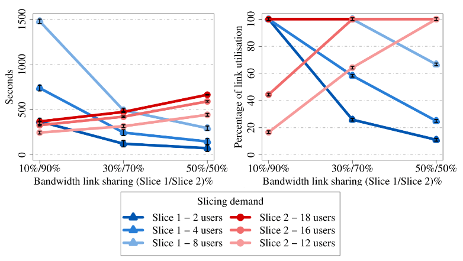
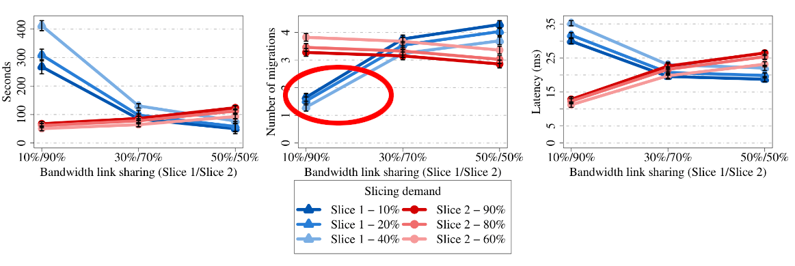

Dynamic Network Slicing for User Mobility Support in 5G Networks
Diogo Gonçalves, Luiz Bittencourt, and Edmundo Madeira
Concurso de Teses e Dissertações - SBRC 2025
Institute of Computing - University of Campinas - UNICAMP/Brazil


Outline
- Introduction
- Related works
- MobFogSim
- Static vs Dynamic slicing
- Dynamic Network Slicing for Mobile Users
- Overhead and performance of Dynamic Network Slice allocation
- Conclusion
The role of mobile users

5G architecture
Service Migration and Network Slicing
Dynamic Slice allocation

Research questions
- What is the impact of user mobility in network slicing management?
- Can dynamic network slicing improve the performance of the service placement and migration process?
- What is the required time to perform network slice operations such as resource allocation and slice reconfigurations and how it impacts the network performance?
- Is dynamic slicing a suitable solution to deal with traffic variation triggered by mobile users in edge computing environments?
Objective
This work focuses on the dynamic slicing allocation problem. In special, this work proposes the use of dynamic network slicing as a supporting technology for improving solutions for the service placement and migration problem in the context of user mobility support in 5G/edge computing infrastructures.
Related work
Scope of network slicing-related solutions
| Work | User mobility | Service migration | Overhead evaluation |
|---|---|---|---|
| [049](2022) | |||
| [115](2022) | ✔ | ||
| [107](2022) | ✔ | ||
| [029](2024) | ✔ | ||
| [155](2024) | ✔ | ||
| [092](2021) | ✔ | ✔ | |
| [035](2024) | ✔ | ✔ | |
| [162](2022) | ✔ | ||
| [156](2021) | ✔ | ✔ | |
| [120](2022) | ✔ | ✔ | |
| [053](2023) | ✔ | ✔ | |
| [168](2023) | ✔ | ✔ | |
| [028](2020) | ✔ | ||
| [081](2022) | ✔ | ||
| [005](2022) | ✔ | ||
| [063](2023) | ✔ | ||
| [007](2022) | ✔ | ✔ | ✔ |
| [017](2023) | ✔ | ✔ | ✔ |
| [110](2024) | ✔ | ✔ | ✔ |
| [143](2024) | ✔ | ✔ | ✔ |
| This work | ✔ | ✔ | ✔ |
Related work
Scope of edge network simulators
| Simulator | Device mobility | D2D comunication | Service migration | Network Slicing |
|---|---|---|---|---|
| iFogSim | ||||
| YAFS | ✔ | |||
| VirtFogSim | ✔ | |||
| EasiEI | ✔ | |||
| EdgeCloudSim | ✔ | ✔ | ||
| FogNetSim++ | ✔ | ✔ | ||
| PureEdgeSim | ✔ | ✔ | ||
| IoTSim-Edge | ✔ | ✔ | ||
| DISSECT-CF-Fog | ✔ | ✔ | ||
| EdgeSimPy | ✔ | ✔ | ||
| EdgeAISim | ✔ | ✔ | ||
| iFogSim2 | ✔ | ✔ | ✔ | |
| EdgeSim++ | ✔ | ✔ | ✔ | |
| Simu5G | ✔ | ✔ | ✔ | |
| Py5cheSim | ✔ | |||
| SliceNet | ✔ | |||
| SliceSim | ✔ | ✔ | ||
| MobFogSim | ✔ | ✔ | ✔ | ✔ |
MobFogSim
Proposed Validation Environment
- VM/container cold/live migration;
- Realistic mobility support (e.g., integration with traffic simulation SUMO);
- Dynamic Network Slicing;
- Device-to-device communication.
CloudSim[8] ➔ iFogSim[5] ➔ MyiFogSim[9] ➔ MobFogSim[7]
It simulates mobile Iot devices on Edge Computing environment
MobFogSim supports:
Validation scenario

Scenario: a mobile user moves from a processing
node to another in a constant speed.
It triggers a service migration between those nodes.
Two slices serve different number of users.
Different levels of resouce availability was also considered.
Validation scenario
Input parameters based on a testbed setup
| Parameter | Value |
|---|---|
| Number of edge nodes | 2 |
| Access point coverage (radius) | 500 meters |
| Container size | 128 MB |
| Througput between edge nodes | 74 mbps |
| User mobility | Constant direction and speed (66.9 km/h) |
| Number of users | 20 |
| User distribuition among the slices(slice 1/slice 2) | 2/18, 4/16, and 8/12 |
| Resource distribuition between the slices(slice 1/slice 2) | 10%/90%, 30%/70%, and 50%/50% |
Static Slicing Allocation Results
Migration time and link usage
Static Slicing Allocation Results
Migration time and link usage
Static Slicing Allocation Results
Migration time and link usage
Proposed slice allocation heuristic
Dynamic Slicing Allocation Results
Migration time - both slices sharing resources
Dynamic Slicing Allocation Results
Migration time - both slices sharing resources
Realistic user mobility

| Parameter | Value |
|---|---|
| Container size | 128 MB |
| Container's execution state size in live migration process | 1.2MB |
| Access point coverage (radius) | 500 meters |
| Number of Cloudlets | 16 |
| Density of Cloudlets per Access Points | 1:4 |
| Migration strategy | Lowest latency |
| User distribuition among the slices(slice 1/slice 2) | 2/18, 4/16, and 8/12 |
| Resource distribuition between the slices(slice 1/slice 2) | 10%/90%, 30%/70%, and 50%/50% |
| User's speed | Variable - real data |
Static Slicing Allocation Results
Migration time, number of migrations, and latency
Static Slicing Allocation Results
Migration time, number of migrations, and latency
Static Slicing Allocation Results
Migration time, number of migrations, and latency
Static Slicing Allocation Results
Migration time, number of migrations, and latency
Dynamic Slicing Allocation Results
Allocated bandwidth, migration time, number of migrations, and latency


Dynamic Slicing Allocation Results
Allocated bandwidth, migration time, number of migrations, and latency
Dynamic Slicing Allocation Results
Allocated bandwidth, migration time, number of migrations, and latency
Dynamic Slicing Allocation Results
Allocated bandwidth, migration time, number of migrations, and latency
Dynamic Slicing Allocation Results
Allocated bandwidth, migration time, number of migrations, and latency
What is the cost of slice reconfiguration?
What is the cost of slice reconfiguration?

Reconfiguration overhead
Reconfiguration ➔ overhead
How much computing process we need to reconfigure the network?
How much time is required to make that reconfiguration?
What is the impact of reconfigurations overhead in the network performance?
Reconfiguration overhead
Proposed model - aims to describe the required time to allocate one slice instance
Reconfiguration overhead
Slice outage

Reconfiguration overhead
Slice outage
Reconfiguration overhead
Service Migration time

Reconfiguration overhead
Service Migration time
Reconfiguration overhead
Latency
Reconfiguration overhead
Latency
Conclusion
User mobility triggers spatial and temporal traffic variations over time. In this context, network infrastructure might present underutilisation and overcapacity scenarios.
Dynamic network slicing has the capability of 1) setting priority levels for distinct user groups and providing them different resources and 2) reducing resource underutilisation and improves network performance by on-demand resource (re)distributions.
Dynamic network slicing reduces the required time to perform service migrations. It allows more service migrations if needed, and provides lower latency by placing services closer to their users.
However, the frequency and the efficiency of those reconfigurations is crucial to the success of such a solution due its overhead.
Slices that quickly operate reconfigurations(a few seconds, e.g., 1-5) reduces its resource underutilisation and provide lower and more stable latency to their users than slices with higher reconfiguration delays(up to 1 min).
Contribution
- One heuristic solution which uses dynamic network slicing as a supporting technology to improve the service migration process;
- One study of the dynamic network slicing as a supporting technology for user mobility support in fog/edge computing infrastructures and vehicular networks;
- A mathematical model which describes the overhead/expected time to allocate and reconfigure the network slices;
- Resource management mechanisms for dynamic slicing allocation, which include solutions for defining the slice shaping, resource allocation and reallocation, and resource sharing scope;
- One simulator for slicing validation in edge computing-based infrastructures, including support to user mobility and service migration.
Scientific Production
- C. Puliafito, D. M. Goncalves, M. M. Lopes, L. L. Martins, E. Madeira, E. Mingozzi, O. Rana, and L. Bittencourt. Mobfogsim: Simulation of Mobility and Migration for Fog Computing. Simulation Modelling Practice and Theory, 101:102062, 2020;
*Diogo M. Gonçalves and Carlo Puliafito share the first author role in that paper. - D. M. Goncalves, C. Puliafito, E. Mingozzi, L. F. Bittencourt, and E. R. M. Madeira. End-to-end Network Slicing in Vehicular Clouds Using the Mobfogsim Simulator. Ad Hoc Networks, page 103096, 2023;
- D. M. Goncalves, L. F. Bittencourt, and E. R. M. Madeira. Overhead and Performance of Dynamic Network Slice Allocation for Mobile Users. Future Generation Computer Systems, 2024;
- D. M. Goncalves, C. Puliafito, E. Mingozzi, O. Rana, L. F. Bittencourt, and E. R. M. Madeira. Dynamic Network Slicing in edge Computing for Mobile Users in Mobfogsim. In 2020 IEEE/ACM 13th International Conference on Utility and Cloud Computing (UCC), pages 237–246. IEEE, 2020;
- D. M. Goncalves, L. F. Bittencourt, and E. R. M. Madeira. Fatiamento Dinâmico de Redes em Computaçao em Névoa para Usuários Móveis. In Anais do XXXIX Simpósio Brasileiro de Redes de Computadores e Sistemas Distribuídos, pages 57–70. SBC, 2021. (In Portuguese);
- D. M. Goncalves, L. F. Bittencourt, and E. R. M. Madeira. Alocação de Fatias de Rede Fim-a-fim para Usuários Móveis Utilizando o Simulador Mobfogsim. In Anais do XL Simpósio Brasileiro de Redes de Computadores e Sistemas Distribuídos, pages 112–125. SBC, 2022 (In Portuguese);
- D. M. Goncalves, L. F. Bittencourt, and E. R. M. Madeira. MobFogSim: Simulation of Mobile Applications in Edge Computing Environments. Accepted for presentation in the IEEE CloudNet 2024.
Journals
Conferences
Tutorial
MobFogSim
- 22 papers
- One undergraduate thesis
- Two master thesis
- One PhD. thesis
26 works report MobFogSim as its validation environment
Awards and Grants
- Thesis selected for presentation in the Dissertation Digest Session of the IEEE/IFIP NOMS 2025;
- Thesis selected for presentation in the Thesis and Dissertation Competition of the SBC SBRC 2025;
- Thesis selected for presentation in the Thesis and Dissertation Competition of the SBC CSBC 2025;
- Grant from the Emerging Leaders in the Americas Program issued by the Government of Canada for six months of research at the University of Waterloo, Canada.
- Grant from the UNICAMP’s Teaching, Research, and Extension Support Fund (FAEPEX) and INCT Future Internet for Smart Cities (InterSCity) for three months of research at Cardiff University, UK.
- Grant from IFIP for student travel to attend IEEE/IFIP NOMS 2025.
Awards
Grants
Future work
- Zero-touch Networks and Computing Continuum
- ML-based solutions can fully self-manage operations such as the prediction of resource demand and user requirements, the placement and migration of VNFs, and the creation, configuration, and management of network slices.
Thank you
Diogo Gonçalves
diogomg@lrc.ic.unicamp.br
github.com/diogomg/MobFogSim

We thanks, in special, the Sao Paulo Research Foundation (FAPESP), 2021/05253-0.
References
[1] GSMA: The State of Mobile Internet Connectivity 2023
[2] GSMA: The Mobile Economy 2024
[3] Ericsson Mobility Report June 2024
Migration triggers
Visual concept of Access Point’ area and its relationship with MobFogSim’s Migration Policy
Migration algorithm
while{mobileDevice is within the migration zone}{
mobileDevice.destinationFogNode = migrationDecision(
slices.fogNodes, mobileDevice, migrationStrategy);
if{mobileDevice.destinationFogNode !=
mobileDevice.currentFogNode}{
if{mobileDevice crosses the MigrationPoint}{
startMigration(slices, mobileDevice.sourceFogNode,
mobileDevice.destionationFogNode);
while{migration is being performed}{
requestSliceReshaping(slices,
mobileDevice.sourceFogNode,
mobileDevice.destionationFogNode);
}
}
}
}
Slice reconfiguration algorithm
if{isThereAnIncresingTrafficVariation()}{
link = linkPresentingAnIncresingTrafficVariation();
if{isThereUnallocatedBandwidth(slice, link)}{
allocateBandwidthForSlice(slice, link);
}
else{
if{isThereBandwidthUnderutilisation(slices, link)}{
deallocateBandwidthFromSlices(slice, setOfSlices, link);
allocateBandwidthForSlice(slices, link);
}
}
}